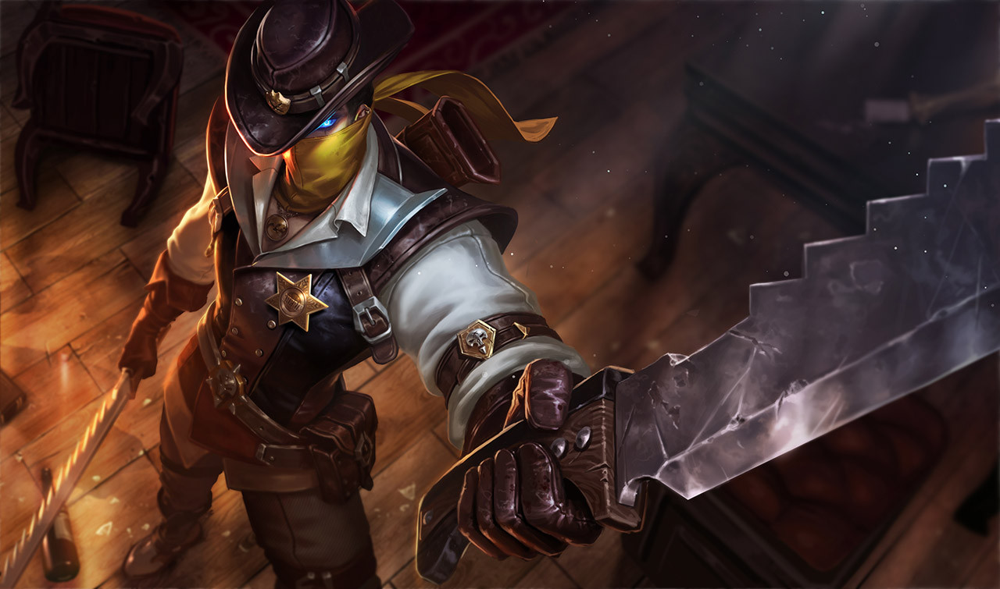

MURAD
Tiểu sử
Không gian - thời gian là cấu trúc của thực tại và cũng đồng thời là khởi nguồn sức mạnh tối cao. Tuy nhiên chưa một thần chú ma thuật nào đủ khả năng khai thác sức mạnh của không gian - thời gian. Chỉ có đá Andura mới có thể chứa được sức mạnh phi thường của không gian - thời gian, cho phép người dùng khai thác nó.
Với mục tiêu sở hữu sức mạnh này, tổ tiên của Murad đã tiến vào sa mạc để tìm kiếm các mảnh vỡ của Andura. Ở đó, họ phải đối mặt với Azzen'ka hung ác và nham hiểm, nhưng bằng sự khôn ngoan, họ đã thu thập được các mảnh vỡ. Họ chế tạo ra một thứ vũ khí vô cùng đáng sợ, có thể thao túng không gian - thời gian và xây dựng một đế chế mới trên sa mạc bằng sức mạnh đó.
Khi Murad đến tuổi trưởng thành, anh chàng đã thừa kế vũ khí từ cha mình và chính thức trở thành người lãnh đạo đế chế. Chàng đã dẫn dắt quân đội Hoàng gia tham gia viễn chinh, diệt trừ các sinh vật nguy hiểm và mở rộng đế chế. Điều này đe dọa nghiêm trọng tới quyền lực của Azzen'ka, gã rất tức giận sau khi khám phá ra sự thật đằng sau thứ vũ khí của Murad. Nhưng Murad chẳng để tâm, bởi vì miễn là có vũ khí bên cạnh, Azzen'ka không thể làm tổn thương chàng.
Azzen'Ka buộc phải thương lượng, đầu hàng có điều kiện với hoàng tử. Murad vui mừng chấp nhận và chính vì vậy, chàng đã bỏ qua cơ hội vàng để giải thoát đế chế khỏi mối đe dọa tiềm tàng mãi mãi. Không có quyền lực kéo dài mãi mãi và Azzen'Ka hiểu vụ thương lượng này chỉ lợi cho gã. Từ trong bóng tối, gã ngầm tạo ra vô số biến cố, buộc Murad sử dụng vũ khí của mình để bảo vệ đế chế non trẻ.
Việc lạm dụng quyền năng đã khiến đá Andura suy yếu rõ rệt, dần dần vũ khí của Murad đã xuất hiện nhiều vết nứt, khiến sức mạnh của thời gian - không gian rò rỉ. Điều này đã làm giảm khả năng chiến đấu của Murad và Azzen'Ka đã nắm lấy cơ hội để triệu hồi một cơn bão cát hùng mạnh nhấn chìm hoàn toàn đế chế thịnh vượng một thời. Nhờ lời cầu xin của cha chàng, vũ khí phát huy sức mạnh cứu Murad thoát khỏi thảm họa, tuy nhiên nó chỉ có thể bảo vệ một mình chàng.
Nhưng chàng trai ấy không bỏ cuộc. Murad che khuôn mặt điển trai của mình và trở thành một lãng khách sa mạc đơn độc, tìm cách phục hồi sức mạnh cho vũ khí của mình cũng như chờ ngày đối đầu với Azzen'Ka. Murad tin chắc rằng miễn là có vũ khí bên cạnh, ngày nào đó chàng sẽ giết Azzen'Ka và khôi phục danh dự, vinh quang cho đế chế
Với mục tiêu sở hữu sức mạnh này, tổ tiên của Murad đã tiến vào sa mạc để tìm kiếm các mảnh vỡ của Andura. Ở đó, họ phải đối mặt với Azzen'ka hung ác và nham hiểm, nhưng bằng sự khôn ngoan, họ đã thu thập được các mảnh vỡ. Họ chế tạo ra một thứ vũ khí vô cùng đáng sợ, có thể thao túng không gian - thời gian và xây dựng một đế chế mới trên sa mạc bằng sức mạnh đó.
Khi Murad đến tuổi trưởng thành, anh chàng đã thừa kế vũ khí từ cha mình và chính thức trở thành người lãnh đạo đế chế. Chàng đã dẫn dắt quân đội Hoàng gia tham gia viễn chinh, diệt trừ các sinh vật nguy hiểm và mở rộng đế chế. Điều này đe dọa nghiêm trọng tới quyền lực của Azzen'ka, gã rất tức giận sau khi khám phá ra sự thật đằng sau thứ vũ khí của Murad. Nhưng Murad chẳng để tâm, bởi vì miễn là có vũ khí bên cạnh, Azzen'ka không thể làm tổn thương chàng.
Azzen'Ka buộc phải thương lượng, đầu hàng có điều kiện với hoàng tử. Murad vui mừng chấp nhận và chính vì vậy, chàng đã bỏ qua cơ hội vàng để giải thoát đế chế khỏi mối đe dọa tiềm tàng mãi mãi. Không có quyền lực kéo dài mãi mãi và Azzen'Ka hiểu vụ thương lượng này chỉ lợi cho gã. Từ trong bóng tối, gã ngầm tạo ra vô số biến cố, buộc Murad sử dụng vũ khí của mình để bảo vệ đế chế non trẻ.
Việc lạm dụng quyền năng đã khiến đá Andura suy yếu rõ rệt, dần dần vũ khí của Murad đã xuất hiện nhiều vết nứt, khiến sức mạnh của thời gian - không gian rò rỉ. Điều này đã làm giảm khả năng chiến đấu của Murad và Azzen'Ka đã nắm lấy cơ hội để triệu hồi một cơn bão cát hùng mạnh nhấn chìm hoàn toàn đế chế thịnh vượng một thời. Nhờ lời cầu xin của cha chàng, vũ khí phát huy sức mạnh cứu Murad thoát khỏi thảm họa, tuy nhiên nó chỉ có thể bảo vệ một mình chàng.
Nhưng chàng trai ấy không bỏ cuộc. Murad che khuôn mặt điển trai của mình và trở thành một lãng khách sa mạc đơn độc, tìm cách phục hồi sức mạnh cho vũ khí của mình cũng như chờ ngày đối đầu với Azzen'Ka. Murad tin chắc rằng miễn là có vũ khí bên cạnh, ngày nào đó chàng sẽ giết Azzen'Ka và khôi phục danh dự, vinh quang cho đế chế
CÔNG TY CỔ PHẦN GIẢI TRÍ VÀ THỂ THAO ĐIỆN TỬ VIỆT NAM
Văn phòng đại diện: Tầng 29, tòa nhà Trung tâm Lotte Hà Nội, số 54, đường Liễu Giai, Phường Cống Vị, Quận Ba Đình,
Thành phố Hà Nội, Việt Nam
Điện thoại: (04)7305-3939 | Fax: (04)3759-2429